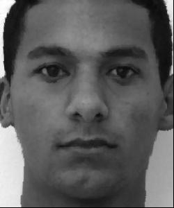

Face Morphing
Overview
A face morph is a seamless transition from one face to another. Two things to consider are face shape and face color. Both must be blended to achieve a smooth looking morph. The first step in creating a face morph is to define pairs of facial correspondences, or landmark points on each face. From these correspondences, I produced a Delaunay triangulation of each image using scipy.spatial.Delaunay.
George
Lindsay
The Midway Face
Each of these triangles corresponds to another triangle in the other face. Taking the vertices of a triangle, I defined an affine transformation of its points to the points in the other image. Then I averaged the two faces' geometries and warped each face to this shape. To get the median face color, I overlayed the two warps and averaged their pixel intensities. This resulted in the midway face, Georsay.
George warped
Lindsay warped

Georsay
Morph Sequence
Instead of averaging the two images in shape and color, I assigned each image a weight and produced 45 images, starting with George at 100% and Lindsay at 0%, and gradually increasing George's weight/decreasing Lindsay's weight. Stitching these images together, then reversing the sequence achieves the seamless morph effect.
Mean face of a population
Using images from the FEI Face Database, I created the mean face of a population with 200 faces. This was done by averaging the facial geometries via triangulation, as well as averaging the color (in this case, black and white intensity). The resulting average face is below.
Here are some example faces from the database, each morphed into the average face shape.
Original
Morphed
Original
Morphed
Original
Morphed

Original
Morphed
I morphed my own face into the average face (shape only). I also morphed the average face into mine.
George
George morphed to average
Average Face
Average Face morphed to George
Caricature
I made a caricature (right) of my face via extrapolation. I weighted my own face shape by 1.5 and the average face shape -0.5. I then warped my face to this face shape. This enhanced my own unique features, such as narrower face width, larger forehead, and smaller mouth.
Extras
Here is a face morph video of my classmates! In the video, Lindsay morphed into me, and I also took headshots for many of the students in the chain.